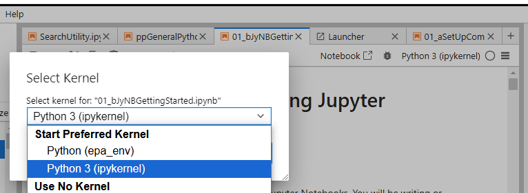
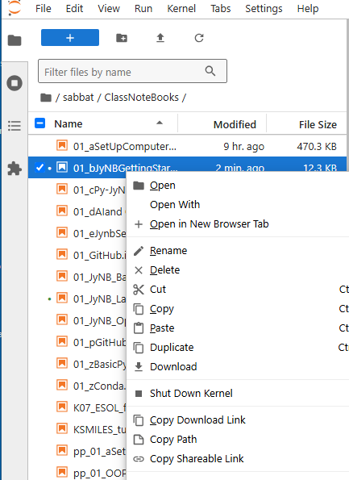
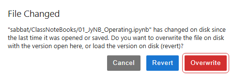
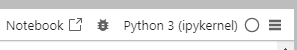

2: Runnng and Creating Jupyter Notebooks#
Learning Objectives:#
In this class you will be creating and using Jupyter Notebooks. You will be writing or modifying code in jupyter notebooks and then using Markdown language to describe the code. You will also be using an AI tutor that generates responses in markdown language, and so the goal of this chapter is to introduce you to running code and provide a reference for writing content in markdown cells.
Topics Covered#
Types of Cells
Keyboard Shortcuts
Running Multiple Notebooks
Code Cells
Markdown Cells
Unicode
LaTex
1. Starting Jupyter Lab#
Jupyter Lab is actually a web application that runs on your browser. Jupyter Lab allows you to run multiple Jupyter notebooks concurrently.
Jupyter Lab- starts the Jupyter Lab server, which is a Python application. This will provide you with a url on your local host that starts with something like http://localhost:8888/lab/tree…Paste the URL into the address bar of your browser and open the page.
If this is the first time it will ask you to pick a kernel. When you pick the kernel:
Jupyter starts a new Python process (interpreter) in the background.
This interpreter is initialized with the specific environment you selected.
The kernel acts as a bridge between this Python interpreter and your Jupyter notebook. **Note: the kernel shows in the upper right corner of your notebook. If it is not the kernel you wish to use you should click on it and choose the one you want
 picking a new kernel if the default one is not the one you want. Note, in this image of a Jupyter Lab there are 5 notebooks running, one in each tab. You can actually run different notebooks in the same lab on different kernels, and you need to be sure the kernel you are running has the packages you need.
1. Types of Cells#
A Jupyter notebook has three types of cells and we will be using the first two types
Code Cells: (can run python or multiple other scripts)
Markdown Cells (a text formatting language we will use)
Raw Cells (these can contain code that is not executed, and are involved in converting notebooks to other types. Unless you get into advanced documentation you will probably not use these during this class)
2. Keyboard Shortcuts#
The easiest way to run a Jupyter notebook is to use a keyboard shortcut. Here are several useful keyboard shortcuts
shift-enterrun cell and move to next cell (creates one if there is none below it)ctrl-enterrun cell and stay in same cellalt-enterrun cell and create new cell below itesc-mconvert cell to markdownesc-yconvert cell to code
3. Running Multiple Notebooks#
It is easy to open multiple notebooks, simply
locate the notebook you want in the “File Browser” of any notebook (top icon of left frame)
right click and choose Copy Shareable Link
Paste link into new browser window.

Warning be careful not to have the same notebook open at the same time in different windows. If you do, Jupyter will give you a warning if you try and save a file that has been altered in the other browser. 
4. Code Cells#
These allow you to run code in your notebook. In this class we will be running python, but there are other options. If you look at the upper right corner of the notebook you can see the python kernel that is being run

Show Line Numbers#
The easiest way to show line numbers is go to the main menu and choose View > Show Line Numbers , and this will toggle them on or off.
The following cell is a code cell, and when you press shift enter it will execute the code and move to the next cell. This will be the most common way we will run cells. In this cell we are printing a string of words (the material in parenthesis of the print function), and performing an arithmetic operation twice. Note, a Jupyter notebook automatically outputs the last expression in a cell, and so 2_3 was output, while 2+2 was not. If we want to output the 2+2 we need to print it, as is done in the subsequent cell.
# A "#" makes a line a comment line and is not executed
print("Hello World") # We will discuss the print function when we get to the python chapter.
2+2
2+3
Hello World
5
# A "#" makes a line a comment line and is not executed
print("Hello World")
print(2+2)
2+3
Hello World
4
5
5. Markdown Cells#
Markdown Formatting#
Use of backticks (`)#
Tips about backticks (below the tilde on your keyboard) in Jupyter notebooks and markdown in general:
Single backticks (
code) are used for inline code snippets within text.Triple backticks (```) are used for code blocks, allowing you to display multiple lines of code.
Headings#
Use # symbol followed by a space
# Heading 1
## Heading 2
### Heading 3
(note, if you look at the above code you will see that backticks were used to prevent the # from turning into a heading)
Links#
[text to show](http:// the link)
Unordered lists#
Use symbols -, * or + followed by a space, I tend to use - all the time
* item 1
* item 2
- indent 1
- indent 2
+ item 3
gives the following, and it makes no difference which symbol is used.
item 1
item 2
indent 1
indent 2
item 3
Enumerated (ordered) Lists#
Simply use a number followed by a space.
1. First item
2. Second item
1. indent
2. indent
1. second indent
2. second indent
3. Third item
The above code gives the following output
First item
Second item
indent
indent
second indent
second indent
Third item
Tables#
Images#
*paste image in (ctrl-v), the text will look like:

**note: Images are not stored as separate file but embedded directly within the notebook file”. This means you can not move images from one notebook to another, but have to make a new copy of them, and paste that new copy.
6. Unicode#
Unicode characters work in code cells. You can copy the character and use it in either code or markdown cells
Table of unicode subscript and superscript characters#
Character |
Subscript |
Subscript Unicode |
Superscript |
Superscript Unicode |
|---|---|---|---|---|
0 |
₀ |
|
⁰ |
|
1 |
₁ |
|
¹ |
|
2 |
₂ |
|
² |
|
3 |
₃ |
|
³ |
|
4 |
₄ |
|
⁴ |
|
5 |
₅ |
|
⁵ |
|
6 |
₆ |
|
⁶ |
|
7 |
₇ |
|
⁷ |
|
8 |
₈ |
|
⁸ |
|
9 |
₉ |
|
⁹ |
|
+ |
₊ |
|
⁺ |
|
- |
₋ |
|
⁻ |
|
= |
₌ |
|
⁼ |
|
( |
₍ |
|
⁽ |
|
) |
₎ |
|
⁾ |
|
print("CH\u2083"+4*"(CH\u2082)"+"NH\u2084\u207A") # Using unicode character
print("CH₃"+4*"(CH₂)"+"NH₄⁺") # Copying text that was already subscripted
CH₃(CH₂)(CH₂)(CH₂)(CH₂)NH₄⁺
CH₃(CH₂)(CH₂)(CH₂)(CH₂)NH₄⁺
Table of unicode greek characters#
Greek Symbol |
Lowercase Unicode |
Uppercase Unicode |
|---|---|---|
α (alpha) |
|
|
β (beta) |
|
|
γ (gamma) |
|
|
δ (delta) |
|
|
ε (epsilon) |
|
|
ζ (zeta) |
|
|
η (eta) |
|
|
θ (theta) |
|
|
ι (iota) |
|
|
κ (kappa) |
|
|
λ (lambda) |
|
|
μ (mu) |
|
|
ν (nu) |
|
|
ξ (xi) |
|
|
ο (omicron) |
|
|
π (pi) |
|
|
ρ (rho) |
|
|
σ (sigma) |
|
|
τ (tau) |
|
|
υ (upsilon) |
|
|
φ (phi) |
|
|
χ (chi) |
|
|
ψ (psi) |
|
|
ω (omega) |
|
|
'\u03BB'
'λ'
Note you can not assign the unicode in a variable assignment (the following code gives an error), but you can copy the symbol from either a code or markdown cell and use that as your variable.
# uncomment the following line and you will see an error when you run it
#'\u03BB' = 560 # nm
λ = 560 # nm
print(f'λ is {λ}.')
print(f'\u03BB is {λ}. ') # this is using f-string formatting that we will cover later
print('h = λν')
λ is 560.
λ is 560.
h = λν
7. Latex (markdown cells)#
LaTeX is a common typesetting system used in scientific and mathematical documents that allows you to put equations in the line of text, or on a unique line. A latex command is preceded by a \ (forward slash). In Jupyter notebooks a the latex command with the forward slash is surrounded by dollar signs. A single dollar sign puts the output in the line of text where it occurs, while double dollar signs put it on its own line.
\\(\lamda\\\) - puts \(\lambda\) in line of text
\\(\\\)\lambda\\(\\\) puts $\(\lambda\)$ on its own line
Note: if you look at the code you will see two forward slashes in front of the dollar signs, which is an escape sequence, and tells Jupyter not to process the dollar sign
Although there are ways you can use LaTex in the code cells you should avoid this because of code portability issues to standard IDEs (Interactive Development Environments). That is, if you use a “Magic Command” like %%latex in a code cell, you can use LaTex in that cell, but it will not work in many other coding environments.
Tables of common LaTex Commands#
Math Operators#
LaTeX |
Symbol |
Feature |
|---|---|---|
\pm |
± |
Plus-minus |
\times |
× |
Times |
\div |
÷ |
Division |
\neq |
≠ |
Not equal |
\approx |
≈ |
Approximate |
\equiv |
≡ |
Equivalent |
\not\equiv |
≢ |
Not equivalent |
\geq |
≥ |
Greater than or equal |
\leq |
≤ |
Less than or equal |
\sim |
∼ |
Similar |
Root Operators#
LaTeX |
Symbol |
Description |
|---|---|---|
\sqrt{x} |
√x |
Square root |
\sqrt[n]{x} |
∛x |
nth root |
\surd |
√ |
Square root symbol |
\cuberoot{x} |
∛x |
Cube root (requires amsmath package) |
\fourthroot{x} |
∜x |
Fourth root (requires amsmath package) |
Calculus Operators#
LaTeX |
Symbol |
Description |
|---|---|---|
\int |
∫ |
Integral |
\iint |
∬ |
Double integral |
\iiint |
∭ |
Triple integral |
\oint |
∮ |
Contour integral |
\partial |
∂ |
Partial derivative |
\nabla |
∇ |
Nabla (del) operator |
\lim |
lim |
Limit |
\sum |
∑ |
Summation |
\prod |
∏ |
Product |
\frac{d}{dx} |
d/dx |
Derivative |
\infty |
∞ |
Infinity |
Frations and Matrices#
LaTeX |
Description |
Rendered Example |
|---|---|---|
\frac{a}{b} |
Simple fraction |
$\(\frac{a}{b}\)$ |
\dfrac{a}{b} |
Display fraction |
$\(\dfrac{a}{b}\)$ |
\cfrac{a}{b} |
Continued fraction |
$\(\cfrac{a}{b + \cfrac{c}{d}}\)$ |
\binom{n}{k} |
Binomial coefficient |
$\(\binom{n}{k}\)$ |
\begin{pmatrix} a & b \ c & d \end{pmatrix} |
Parenthesis matrix |
$\(\begin{pmatrix} a & b \\ c & d \end{pmatrix}\)$ |
\begin{bmatrix} a & b \ c & d \end{bmatrix} |
Bracket matrix |
$\(\begin{bmatrix} a & b \\ c & d \end{bmatrix}\)$ |
\begin{vmatrix} a & b \ c & d \end{vmatrix} |
Vertical bar matrix |
$\(\begin{vmatrix} a & b \\ c & d \end{vmatrix}\)$ |
\begin{Vmatrix} a & b \ c & d \end{Vmatrix} |
Double vertical bar matrix |
$\(\begin{Vmatrix} a & b \\ c & d \end{Vmatrix}\)$ |
Code Portability Considerations#
I principle you should avoid using LaTeX in code cells, and only use it in markdown cells, or else it may not be portable to standard python IDEs
Acknowledgements#
This content was developed with assistance from Perplexity AI and Chat GPT. Multiple queries were made during the Fall 2024 and the Spring 2025.